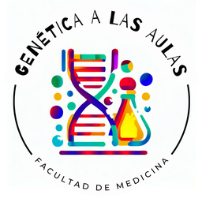

Acerca de
Quiénes somos, y cómo podés usar estos juegos en tu clase.

Genética a las Aulas es un proyecto de extensión de la Unidad Académica de Genética de la Facultad de Medicina (Universidad de la República). Desde 2018 hacemos talleres de genética en escuelas y liceos de Montevideo y del interior del país, y actividades para el público en general: la Semana de la Ciencia y la Tecnología, el Día del Patrimonio y las jornadas del Día de las Mujeres en la Ciencia, entre otras.
También hacemos talleres para docentes y estudiantes de formación docente, pensados como talleres multiplicadores: quienes participan se llevan actividades prácticas de genética para hacer después con sus propios grupos.
El programa está avalado por la Facultad de Medicina, cuenta con el apoyo de ANEP y trabaja en colaboración con Ceibal STEM. Lo coordinan las Dras. Silvana Pereyra y Mónica Cappetta.
Acercar a docentes y estudiantes a la investigación científica y a los laboratorios de genética, para despertar el interés por la ciencia, estimular la curiosidad y democratizar el acceso.
Los talleres presenciales tienen un alcance limitado. Los juegos llevan los mismos conceptos a cualquier aula con una computadora o un celular, sin materiales ni instalación, para preparar un taller, repasar después o como actividad en sí misma, con o sin taller.
Los juegos parten de los temas que trabajamos en los talleres de extensión y de contenidos de la currícula de primaria y secundaria. Para cada tema pensamos qué concepto se podía convertir en juego, diseñamos los ejercicios y escribimos los textos, los ejemplos y la información para docentes. Después los programamos en HTML y JavaScript con asistencia de una herramienta de inteligencia artificial (Claude, de Anthropic), que también usamos para pulir la redacción. Todo el contenido fue revisado y probado por el equipo, que es responsable de él, y lo fuimos ajustando a partir de las pruebas y de los comentarios de colegas.
Los ejercicios son de elaboración propia y no se basan en materiales publicados por otros.
¿Encontraste un error o tenés una sugerencia? Escribinos a geneticaalasaulas@gmail.com.
Diseño, contenidos y desarrollo: Silvana Pereyra.
En el marco de: proyecto de extensión Genética a las Aulas (coordinado por Silvana Pereyra y Mónica Cappetta), Unidad Académica de Genética, Facultad de Medicina, UdelaR.
Estos juegos se distribuyen bajo licencia Creative Commons Atribución-NoComercial 4.0 Internacional. Podés usarlos, compartirlos y adaptarlos en tus clases y materiales, siempre que menciones la fuente (ver abajo cómo citar) y no sea con fines comerciales.
Para saber qué juegos se usan más, contamos las visitas con GoatCounter. No usa cookies ni guarda datos personales de quien juega, y los juegos no piden nombre ni ningún otro dato.
Si usás los juegos en una clase, una presentación o un trabajo, citalos así:
Pereyra S. Juegos de Genética a las Aulas. Proyecto de extensión Genética a las Aulas, Unidad Académica de Genética, Facultad de Medicina, Universidad de la República; 2026. https://geneticaalasaulas.github.io/juegos/